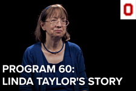

*Jared is currently seeking a full-time position upon his graduation in April 2020. You can reach him at Hegyi.5@osu.edu.
Jared Hegyi is a fourth-year student at The Ohio State University studying Strategic Communication and Professional Writing. He has earned a 4.0 GPA in his major and is working to keep this grade average until his graduation in 2020. After graduation, Jared plans to begin his career in the field of Marketing Communications for either a reputable marketing communications or publications relations agency or a related position within a company.
Being in his fourth year, Jared has completed a freelance position with Ohio State's Lantern TV, a semester-long internship with MediaSource (a full-service creative agency company in Columbus specializing in brand journalism), two research positions within the School of Communication at Ohio State, and has been a marketing communications intern with The Ohio State University since Summer 2019. While Jared will be staying with Ohio State throughout his senior year, he is actively seeking and applying to full-time positions for post-graduation.
Both inside and outside of the classroom, Jared has committed himself to self-development. From classes and internship experience, he has successfully developed his writing skills for public relations and marketing pieces, as well as furthered his already proficient analytical abilities. Outside of the classroom and office, Jared continues his professional development through workshops and training sessions. These have not only earned him certifications, but have also bettered his research and problem-solving skills, along with actively developing his interest in marketing communications and public relations.

- 
Recent Projects:
My team and I created this earned media campaign to pitch to Root Insurance for potential implementation in 2020.
I published this article during my internship at Ohio State to share a little-known rule about Ohio State's marching band.
I led this video project promoting Program 60 at The Ohio State University during my internship at Ohio State.
__
Jared Hegyi (2019) | Contact